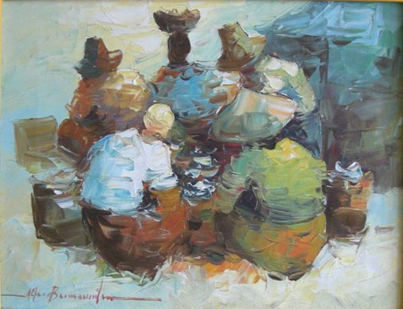

Alfredo Buenaventura
1942 – 1982
Artist Biography
Alfredo O. Buenaventura Y Ostria was born into a distinguished artistic family in Bulacan, a province north of Manila, the Philippines. After briefly studying art at the University of Santo Tomas, Alfredo came under the tutelage of his uncle Cesar Buenaventura. This was at a time, in the 1960s, when Cesar was at his artistic peak as a leading painter of impressionistic landscapes. Alfredo used a palette knife to create a thick impasto expressionism, softened by impressionism learned from his uncle, for “a rather modern look at traditional scenes” (Dr David Wurfel). Alfredo died of a heart ailment shortly before his fortieth birthday. His paintings are in private collections in the United States, Spain and the Philippines and the public collection of York Centre for Asian Research.

Untitled